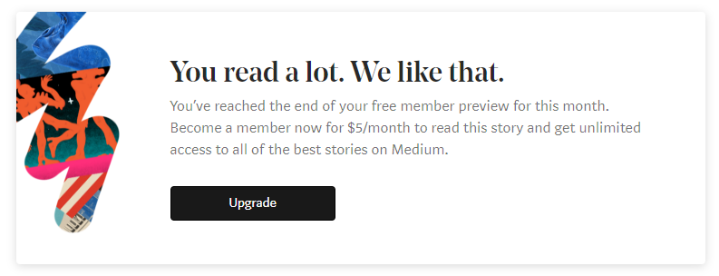

the state of the mobile web.
late last year I was at a tech conference in atlanta when a guy
asked me about something regarding
mobile web design. anytime this subject comes up I usually can't help but talk about
what a horrible place the mobile web is. for the top one percent of
people with blazing-fast connections and nice large iphone screens,
maybe the mobile web isn't too bad. but most people are faced with a
web riddled with horrible load times, poor performance, and
difficult-to-navigate interfaces that are not optimized for mobile
devices.
I think the mobile web can yet be saved, but it's in a grim situation right now. here are some statistics about the current situation:
most internet traffic is from mobile devices — above fifty percent. that number will likely increase. and yet, most websites feel like total crap when viewing them on a mobile device.
on top of that, the desktop web isn't doing great either. poorly designed websites and horribly implemented wordpress templates perforate the surface of the web, creating some sort of desert wasteland with tiny oases dotting the landscape. cookie banners, privacy policy popups, and paywalls are around every corner. and even these are only a few of the surface level problems affecting the mobile web and the desktop web.

maybe the worst thing of all is that there are millions of
developers who don't care if their software will give the best
possible experience to their users or not — as long as it
makes money. it's like if a gardener just let their plants die after
harvesting their fruit, treating their garden with complete
disrespect. I understand that some people by some twist of fate just
have to do this to make ends meet, and I pity them. however, if you
touch the garden of the web by choice, and do so without any care
for the quality of the experience you provide,
then...
I mentor several web development students these days. I usually ask them what made them want to become a web developer. the answer usually involves money, or some noncommittal "I just like computers" type answer. while I do understand this, I really want to see more new people entering the field with a fierce passion for making the web a better place. people who have experienced a wide spectrum what the web has to offer over the years and said "yeah, I can do better than that". people like that are so rare, I think. it's kind of unfortunate.
so, for a long time now, I've been looking for ways to make the internet a more beautiful place — and inspire others to do the same. and even more than that — like I said — I've been looking for people who care about this as much as I do. if that sounds like you, please tell me what you're doing and what you've found. you can contact me using the discord or twitter links below.
the thing is, the internet is made for humans. the internet is a tool for sharing information. it really doesn't go much further.
plant a garden in the wasteland. or at least a few flowers while you
still can. the internet is counting on you. I'm counting on you
too!
What I'll be doing: I am actively,
relentlessly researching actionable, simple ways to make the web a
better place. I will be posting what I find whenever I find it both
here on this blog, and on
my twitter. this blog post mainly was to serve as an intro to what I'm
working on / a call to action (?) / cry for help (?) / something.
I'm still trying to figure this out. thanks for reading.
currently listening to:
- infomorph - kamome sano remix by kamome sano and etia from infomorph
- ruler of everything by tally hall from marvin's marvelous mechanical museum
- バイナリ by the musmus from prologue
- soft atrocity by rook + nomie from me & you
-
armageddon
by leaf